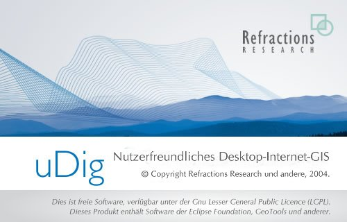
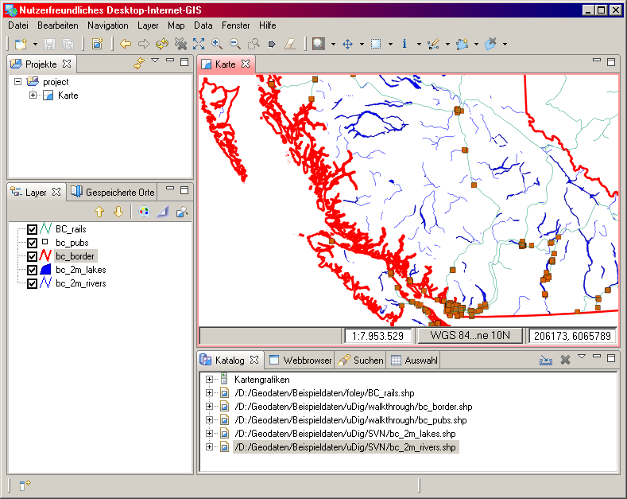
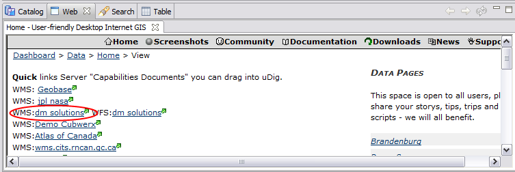
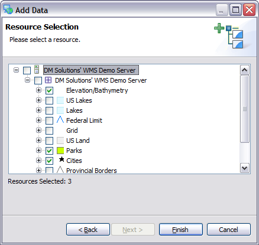
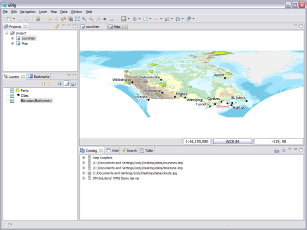
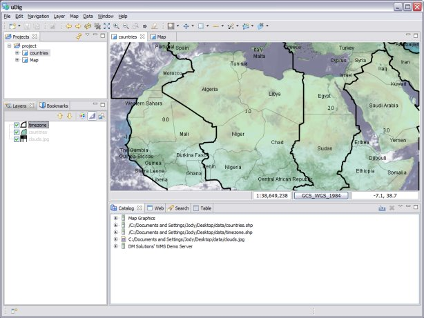

Schnelleinstieg
Dieses Tutorial dient dazu, Ihnen in Kürze einen Überblick über die Bedienung und die Fähigkeiten des Systems zu geben. Es ist Teil der Online-Hilfe.
Beispieldaten
Bevor Sie beginnen, nehmen Sie sich bitte einen Moment Zeit, um die Beispieldaten aus dem Internet herunterzuladen:
Klicken Sie mit der rechten Maustaste auf folgenden Link und wählen Sie Link speichern als...
data-v1_1.zip
- Wenn sie nach dem Speicherort gefragt werden, wählen sie ein geeignetes Verzeichnis oder ihren Desktop
- Entpacken Sie diese Dateien das Verzeichnis Eigene Dateien oder ein anderes Verzeichnis ihrer Wahl.
Natürlich können Sie auch ihre eigenen GIS-Daten verwenden. Mit den bereitgestellten Daten können Sie das Tutorial jedoch Schritt für Schritt durcharbeiten.
Die Anwendung uDig
- Wählen sie uDig 1.1 > uDig aus dem Startmenü
- Die Anwendung wird einige Sekunden zum Starten benötigen.

Die Anwendung uDig verwendet einen Ordner mit Einstellungen in Ihrem Home-Verzeichnis. dieser Ordnung angelegt wenn die Anwendung das erste Mal gestartet wird. sollte es zu Problemen kommen oder sollten Sie uDig unter Linux oder auf einem Mac ausführen, lohnt ein Blick auf die Seite uDig starten.
Das Willkommensfenster
- Wenn sie uDig das erste Mal starten, wird ein Willkommensfenster angezeigt, das die ganze Arbeitsfläche einnimmt. Es bietet den Zugriff auf Tutorials, Dokumentationen und die Projektwebseite.
- klicken Sie auf den gebogenen Pfeil in der oberen, rechten Ecke, um zur Arbeitsfläche zu gelangen.

Sie können die Willkommensseite jederzeit erneut aufrufen, indem sie im Menü Hilfe > Willkommen wählen.
Der Arbeitsplatz
Der Arbeitsplatz bietet mehrere Editoren (zur Kartenanzeige und -Bearbeitung) und Fenster, welche Informationen über die gerade geöffnete Karte anzeigen.

In dem Screenshot sehen Sie einen typischen Zustand von uDig mit dem Kartenfenster (re. o.), dem Projektfenster (li o.), dem Layerfenster (li. u.) und dem Katalog (re. u.).
Dieser Fenster werden im Folgenden beschrieben, wenn wir ihre Nutzung erklären.
Dateien
Zu Beginn laden Sie einfach einige der Beispieldaten, die Sie zuvor heruntergeladen haben.
- wählen Sie Layer > hinzufügen aus dem Menü zum Öffnen des Dialogs Datenquellen
- Wählen Sie Dateien aus der Liste der Datenquellen
- Klicken Sie auf weiter, um die Dateiauswahl anzuzeigen
- Wählen Sie die Dateien countries.shp und clouds.jpg aus ihrem Datenverzeichnis
- Bestätigen Sie mit Öffnen. Folgende Dinge passieren:
- Ein neuer Karteneditor wird geöffnet und zeigt den Inhalt ihres Shapefiles. Dieser bestimmt auch den Namen und die Kartenprojektion der Karte.
- Wie Sie sehen, wurde der Katalog aktualisiert und zeigt nun Einträge für countries.shp und and clouds.jpg. Der Katalog zeigt die der Anwendung bekannten Ressourcen an.
- Das Layerfenster zeigt die Kartenlayer dieser Karte. mit diesem Fenster können Sie die Stileigenschaften und die Reihenfolge der Kartenlayer und insgesamt den Inhalt ihrer Karte beeinflussen.
- Auch das Projektfenster wurde aktualisiert. Dort befindet sich nun ein Eintrag project>countries. Sie können zur gleichen Zeit mehrere Projekte geöffnet haben und jedes Projekt kann aus mehreren Karten bestehen.
- Öffnen Sie nun Ihr Datenverzeichnis
- Ziehen Sie die Datei clouds.jpg in den Karteneditor. Die Karte erhält einen neuen Layer.
- Die Reihenfolge, mit der die Kartenlayer gezeichnet werden, ist im Layerfenster ersichtlich. im Moment wird der Kartenlayer clouds.jpg über dem Layer countries.shp gezeichnet.
- Ziehen sie mit der Maus in Layer mit den Wolken unter dem anderen Kartenlayer.

Hinweis: Eine der am häufigsten gestellten Fragen ist aus Sicht vieler Firmen der Speicherverbrauch einer Anwendung. im Gegensatz zu vielen dieser GIS-Anwendungen benötigt uDig nur eine feste Menge Speicher. Der Shapefile im obigen Beispiel wird nicht in den Speicher geladen. unser Prinzip ist, daß die Daten auf der Festplatte beziehungsweise im jeweiligen anderen Datenspeicher verbleiben und nur diejenigen Daten geladen werden, die angezeigt werden sollen.
Tip Natürlich können Sie auch alle anderen Arten von unterstützten Datendateien durch Drag&Drop in die uDig-Anwendung übertragen!
Die Karte
Mittels der Navigationswerkzeuge in der Symbolleiste können sie bestimmen, auf welchen Teil der Erde Sie schauen.
- Standardmäßig ist dort das Werkzeug
 Zoom zu sehen.
Zoom zu sehen.
- Sie verwenden das Zoomwerkzeug, indem die mitgedrückter linke Maustaste ein Rechteck und den Bereich ziehen, den Sie gerne sehen wollen.
- Zum Verkleinern der Ansicht ziehen Sie ebenfalls ein Rechteck, aber mit gedrückter rechter Maustaste. Der aktuelle Kartenausschnitt wird dann in diesem Bereich angezeigt werden.
- Das Werkzeug
 Kartenausschnitt verschieben kann dazu verwendet werden, sich auf der Karte zu bewegen, ohne den Maßstab zu verändern.
Kartenausschnitt verschieben kann dazu verwendet werden, sich auf der Karte zu bewegen, ohne den Maßstab zu verändern.
- Es existieren noch weitere Navigationsschaltflächen, die Sie jederzeit nutzen können:
 Gesamte Karte anzeigen selten Kartenausschnitt so, daß alle Kartenlayer vollständig sichtbar sind.
Gesamte Karte anzeigen selten Kartenausschnitt so, daß alle Kartenlayer vollständig sichtbar sind. Vergrößern und
Vergrößern und  Verkleinern können verwendet werden, um den Maßstab um einen festen Faktor zu verändern.
Verkleinern können verwendet werden, um den Maßstab um einen festen Faktor zu verändern.- die Navigationsschaltflächen Zurück und Vorwärts erlauben es schließlich, durch die zuvor genutzten Ansichten zu wechseln.
Tip: auch während der Verwendung vieler anderer Werkzeuge, inklusive Verarbeitungswerkzeuge, können Sie den Kartenausschnitt bei gedrückter mittlere Maustaste verschieben und durch Drehen des Scrollrades zoomen.
Web Map Server
Einer der Gründe für Anwendungen wie uDig ist der Zugang zu vielen frei verfügbaren Geodaten im Internet. Dieser Abschnitt wendet sich den sogenannten Web Map Servers zu. Diese stellen generierte Karten zur Verfügung, die in ihrer eigenen Karten einbauen können.
- Wählen sie *Datei > Neu > Neue Karte" aus der Menüleiste.
- Wechseln Sie zum Fenster Webbrowser, das sich neben dem Katalog befindet.
- Klicken Sie auf den Link WMS:dm solutions

- Es erscheint ein Dialog zu Ressourcenauswahl. Wählen Sie dort die folgenden Kartenlayer:
- Elevation/Bathymetry (Höhendaten)*
- Parks
- Cities (Städte)

- Mittels der Schaltfläche Hinzufügen erscheinen diese Kartenlayer auf Ihrer Karte.

- Verwenden Sie das Zoomwerkzeug, um die Parks näher zu betrachten.
- Klicken Sie auf das Symbol
 und anschließend auf einen der Parks, um mehr über diesen zu erfahren.
und anschließend auf einen der Parks, um mehr über diesen zu erfahren.
Tip: Sie können auch die Tastatur verwenden und mittels der Tasten Z und I zwischen den beiden Modi umschalten.
Stile
- Wählen Sie project > countries. Sie können auf den Namen dieser Karte doppelklicken, um sie zu öffnen. Wenn sie es noch alternativer wünschen, können Sie auch im Kontextmenü dieser Karte "Öffnen" wählen.
- wählen Sie den Kartenlayer countries im Layerfenster aus
- Durch einen Rechtsklick in dessen Kontextmenü und die Auswahl von "Stil ändern..."gelangen sie in den Stildialog.
- Wir werden nun einige Dinge hinsichtlich der Anzeige des Layers countries ändern
- Linie: Klicken Sie auf Farbe und ändern Sie die Farbe auf Schwarz
- Füllung: Entfernen Sie den Haken aus dem Kontrollkästchen. So wird die Füllung entfernt.
- Beschriftung: Setzen Sie das Häkchen und wählen Sie CNTRY_NAME aus der Liste der Attribute.

- Klicken Sie auf Anwenden, damit ihre Änderungen auf der Karte sichtbar werden.
- Wenn sie mit dem Ergebnis zufrieden sind, könne sie mit Schließen schließen den Dialog ausblenden.
Es gibt auch Dateien, die ihre Stile gleich mitbringen. Hier ein Beispiel:
- Klicken Sie auf Layer > Hinzufügen aus der Menüleiste.
- Wählen Sie Dateien aus der Liste der Datenquellen und drücken Sie auf Weiter.
- Öffnen Sie mit der Dateiauswahl das Shapefile timezone.shp.
will
- Mit dem Hintergrundbild auf der Karte ist sich etwas schwierig, den Überblick zu behalten. Wählen Sie deswegen im Menü Karte > Mylar. So fokussieren Sie auf den ausgewählten Layer.
- Klicken Sie im Layerfenster nur nacheinander auf die Kartenlayer timezone, countries und clouds.jpg, um den Mylareffekt zu erleben.

- Sie können diesen Effekt jederzeit wieder ausschalten, indem sie im Menü Karte > Mylar wählen.
Wie weiter?
Dieses Tutorial ist nur der erste Schritt hin zu einer vollständigen Beherrschung von uDig. Es gibt eine Menge weiterer Hilfen und Tutorials.
- Tutorial 1 Probieren Sie die Datenanbindung mittels PostGIS, nutzen Sie einen Web Feature Server und entdecken Sie, was hinter der tollen "Color Brewer"-Technologie steckt.
- Tutorial 2 Lernen Sie,wie Sie Shapefiles anlegen anlegen und Features manipulieren können.dieses Tutorial beinhaltet die Installation von GeoServer und die Bearbeitung mittels Web Feature Server.
(c) Copyright (c) 2004-2008 Refractions Research Inc. and others.